Victor Mesa Jr.

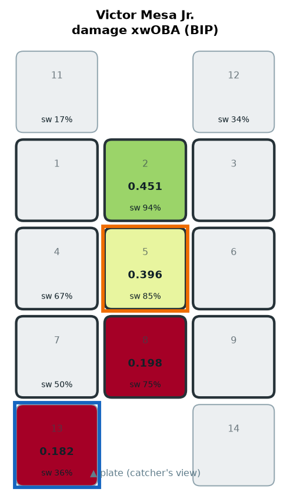
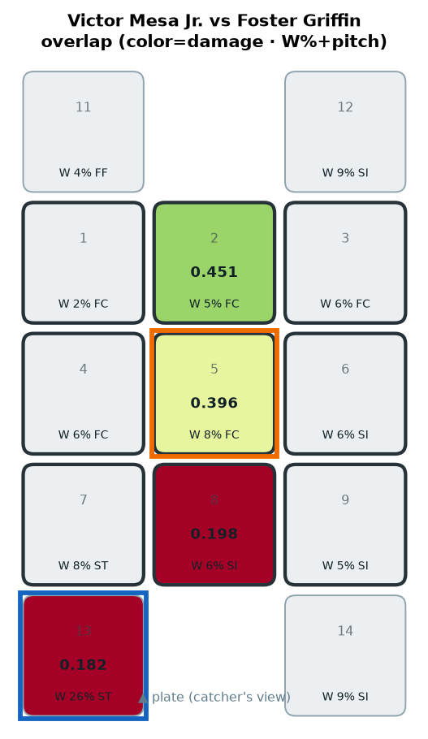
COLD OUT-DN-3B ← mainly ST (W 25.9%)
COLD OUT-DN-3B
Junior Caminero
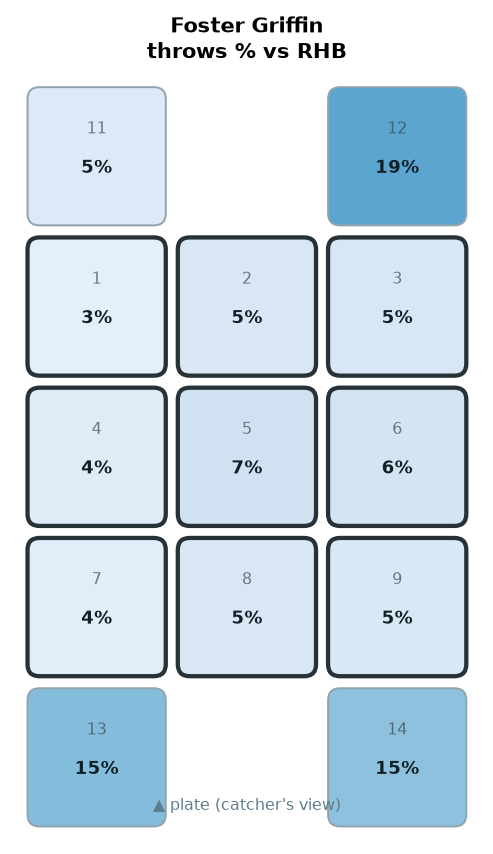
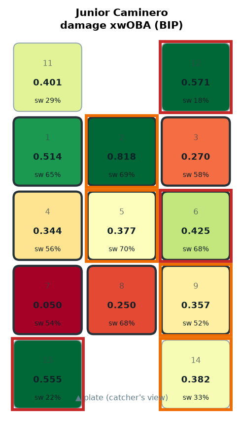
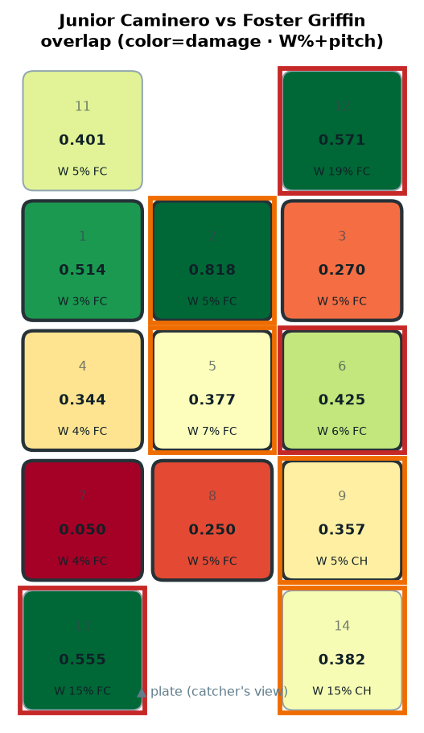
HOT OUT-UP-1B ← mainly FC (W 18.9%) · HOT OUT-DN-3B ← mainly FC (W 15.3%) · HOT MID-AWAY ← mainly FC (W 6.3%)
HOT OUT-UP-1B · HOT OUT-DN-3B · HOT MID-AWAY
Yandy Díaz

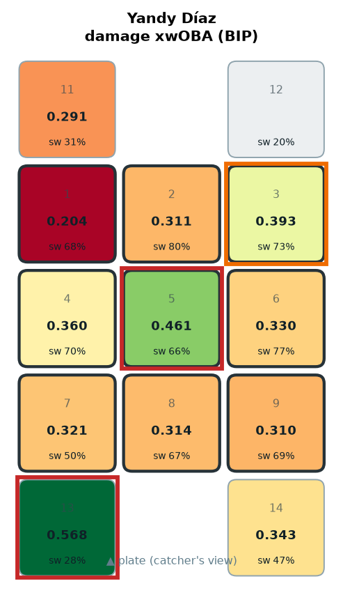
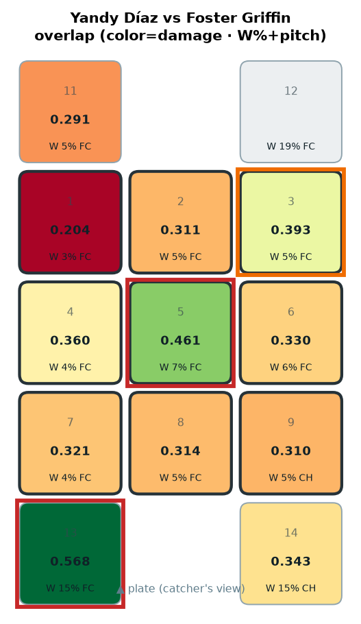
HOT OUT-DN-3B ← mainly FC (W 15.3%) · HOT HEART ← mainly FC (W 7.1%)
HOT OUT-DN-3B · HOT HEART
Jonathan Aranda
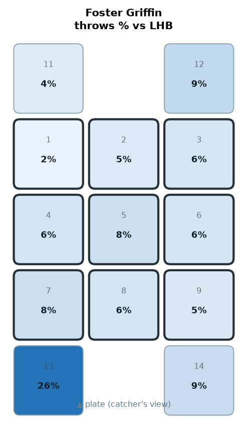
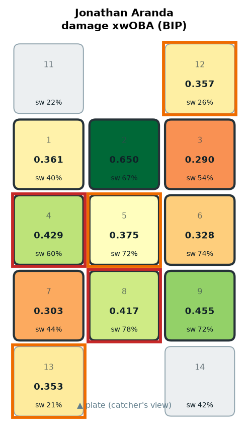
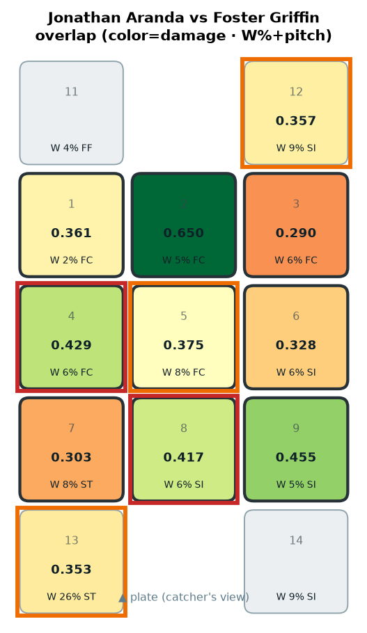
HOT MID-IN ← mainly FC (W 6.3%) · HOT LO-MID ← mainly SI (W 6.4%)
HOT MID-IN · HOT LO-MID
Jonny DeLuca

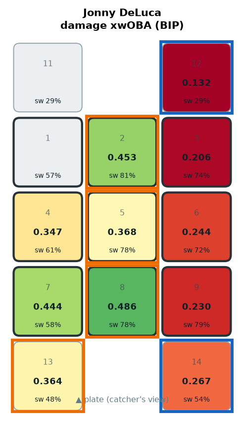
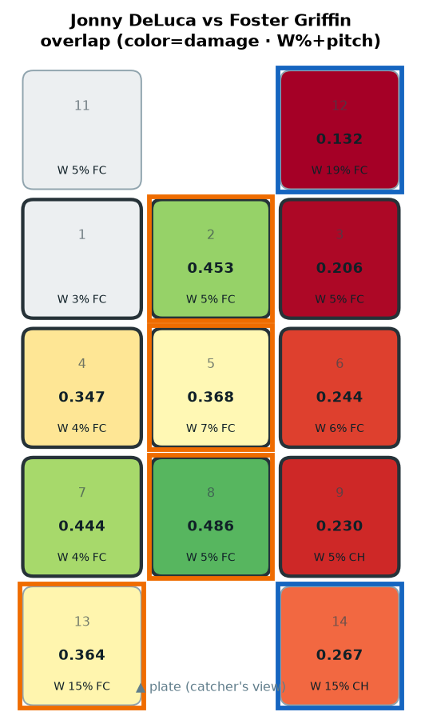
COLD OUT-DN-1B ← mainly CH (W 14.5%) · COLD OUT-UP-1B ← mainly FC (W 18.9%)
COLD OUT-DN-1B · COLD OUT-UP-1B
Chandler Simpson

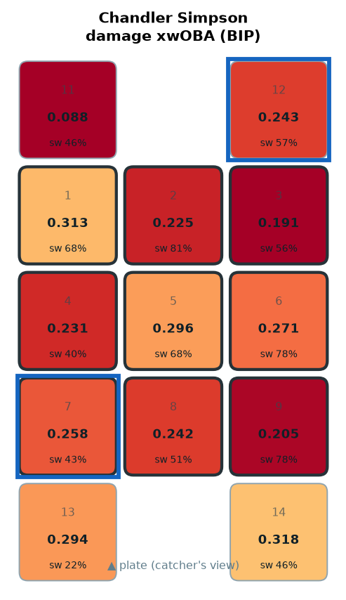
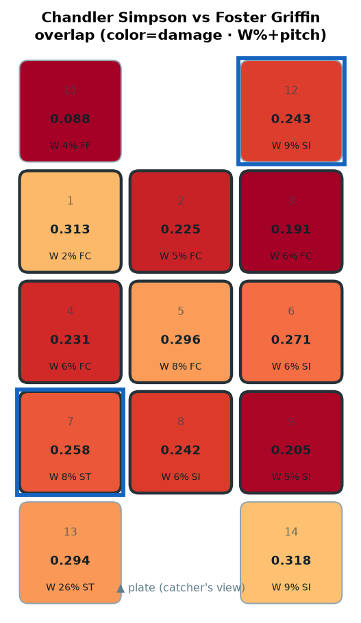
COLD OUT-UP-1B ← mainly SI (W 9.1%) · COLD LO-IN ← mainly ST (W 7.8%)
COLD OUT-UP-1B · COLD LO-IN
Liam Hicks

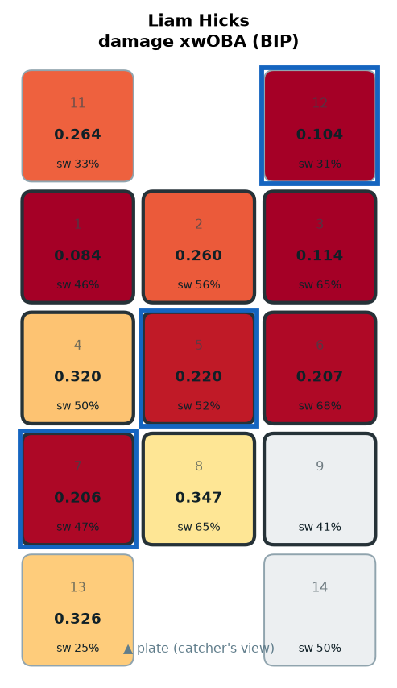
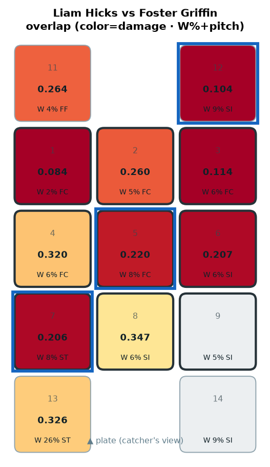
COLD HEART ← mainly FC (W 7.7%) · COLD LO-IN ← mainly ST (W 7.8%) · COLD OUT-UP-1B ← mainly SI (W 9.1%)
COLD HEART · COLD LO-IN · COLD OUT-UP-1B
Richie Palacios

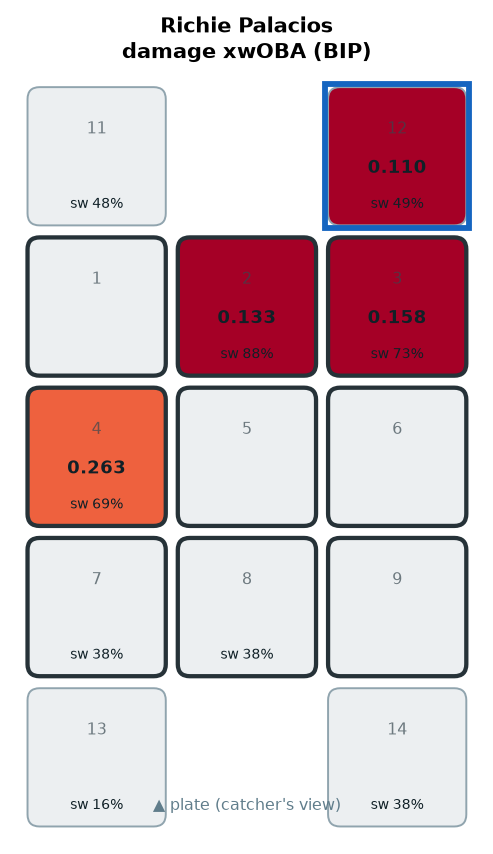
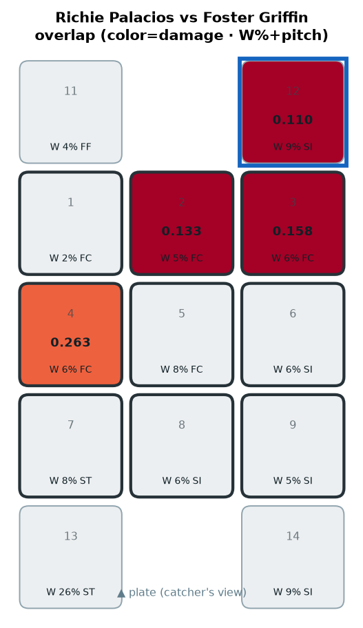
COLD OUT-UP-1B ← mainly SI (W 9.1%)
COLD OUT-UP-1B
Taylor Walls

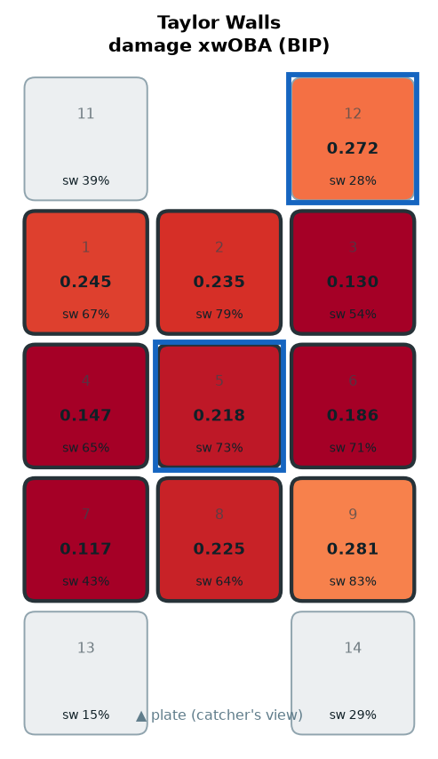
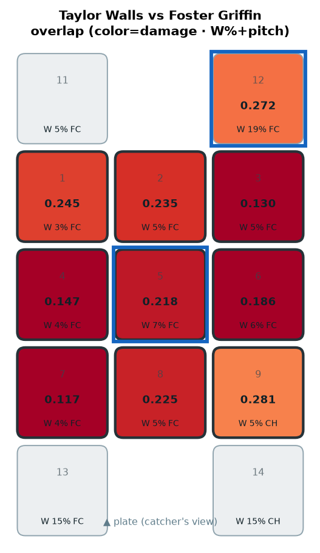
COLD OUT-UP-1B ← mainly FC (W 18.9%) · COLD HEART ← mainly FC (W 7.1%)
COLD OUT-UP-1B · COLD HEART